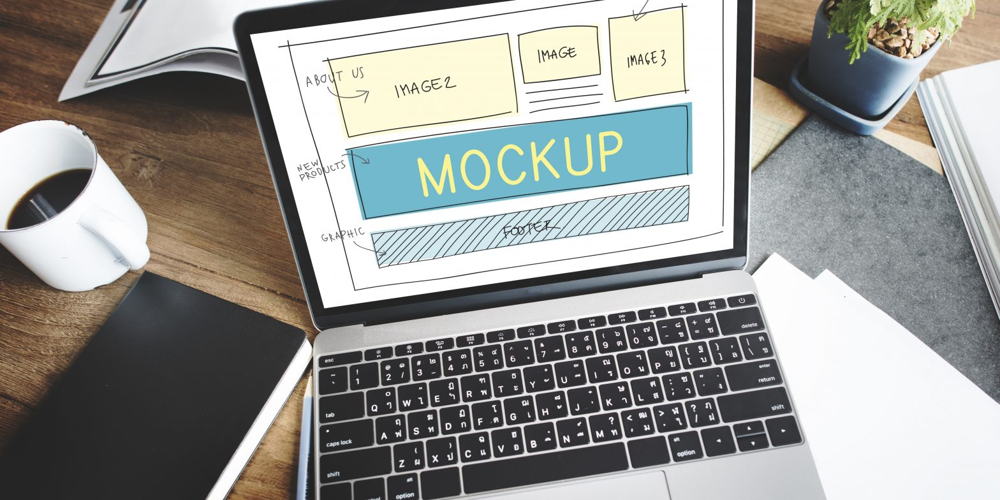

Un mockup, traducido del inglés como bosquejo, es un fotomontaje a través del cual los diseñadores gráficos pueden presentar sus propuestas a los clientes.
Gracias a los mockups podemos presentar nuestro trabajo de una forma profesional, pero ahorrándonos los costes de impresión y montaje. Podremos mostrarle al cliente, cómo lucirá el diseño del proyecto gráfico en muchos formatos diferentes. De hecho, para el caso del diseño de logos, contamos con mockups para todo tipo de aplicaciones: papelería, vinilos, cartelería, artículos de merchandising.
Estos fotomontajes se encuentran alojados bajo un fichero, normalmente de Adobe Photoshop y nos permiten situar nuestros diseños en un entorno determinado. Podremos valorar “cómo funcionan” o cómo lucen bajo un contexto particular. Al mismo tiempo gracias a ellos, podremos estudiar también la capacidad de nuestra propuesta y el cliente podrá obtener una visión mucho más acertada y realista de ella.
Un Mockup es, en definitiva, un montaje que simula el resultado de un producto y que sirve para obtener la aprobación del cliente o consumidor final. Dicho de otra forma, es el canal a través del cual podemos presentar un proyecto y demostrar cómo quedará, tanto en lo estético como en lo funcional.
En nuestra agencia de marketing digital, recurrimos al Mockup en múltiples ocasiones, especialmente cuando iniciamos el proceso de creación de una página web. La fase de preparación del Mockup es posterior al briefing inicial junto a nuestro cliente, y anterior al desarrollo real de la página web (explicado a grandes rasgos).
De este modo, los Mockups nos permiten presentar nuestro trabajo de forma profesional, pero ahorrándonos los costes de impresión y de montaje. Además, resultan útiles para que el cliente o consumidor de ese producto pueda indicar qué cambios aplicaría o qué desearía mejorar de ese proyecto. ¿Entiendes ahora por qué es una herramienta imprescindible?
Aunque te hayamos hablado del Mockup en la fase de creación de una web, debes saber que existen distintos tipos de Mockup en función de cuál sea el producto final al que corresponden. En las agencias de marketing y diseño, se usan para todo tipo de proyectos: desde artículos de merchandising hasta artículos de cartelería o flyers, y blogs. Si explicamos la cantidad de mockups que hay para cada cosa, nos quedaremos cortos asi que solo dejaremos el ejemplo de unos cuantos.